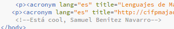

La etiqueta q define una cita corta que se representa como un elemento en línea sin saltos de línea. Ej:
Yo llegué en el momento justo, interesado, cuando el hipertexto e Internet habían visto ya la luz. La tarea que me correspondía era hacer que casaran
.
La etiqueta blockquote define una cita larga que se representa como un elemento de bloque. Ej:
Yo llegué en el momento justo, interesado, cuando el hipertexto e Internet habían visto ya la luz. La tarea que me correspondía era hacer que casaran.
Tim Berners-Lee, Tejiendo la Web.
LMSGI.
CIFP Majada Marcial.
